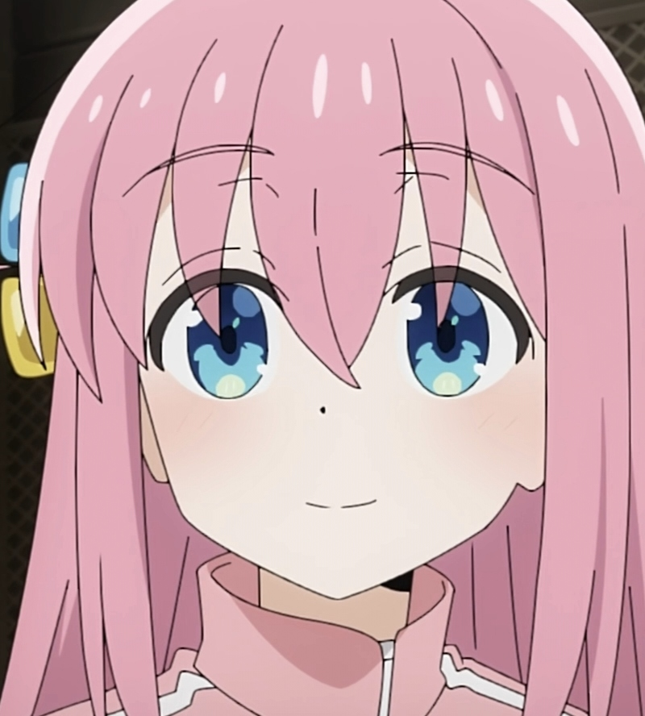

后藤独是一个性格孤僻的吉他手，因机缘巧合先后认识了伊地知虹夏（いじちにじか） 、山田凉（山田 リョウ） 、喜多郁代（きた いくよ） 并组成了“纽带乐队”（結束バンド），后藤独为乐队主吉他手。
后藤独是一个极度认生、阴暗的高中一年级学生，也是纽带乐队的主吉他手 。因为憧憬在幕后也能闪耀的乐队活动而开始弹吉他，虽然有真正的实力，但是不能在乐队和人前很好地发挥。总是把“啊”放在对话的开头。
粉色长发，蓝色眼眸，身穿运动服，头发右侧有黄色和蓝色的方块发饰。
初中时是短发，因为不敢去美容院，所以头发越来越长，刘海盖过眼睛。衣品很糟糕，上身永远是标志性的粉色运动服和黄蓝发卡，上学时会在运动裤上套裙子。
平常穿着宽松的运动服所以不容易看出来，但实际上身材非常好。
性格孤僻，有严重的社交恐惧症，甚至极端时在动画中都会表现出画崩的样子。无法和人对上眼神，脑内想法过多且奇特夸张，无法主动和别人对话，不敢拒绝别人的请求。
非常缺乏自信，对自己的评价很低，难以发现自己的优点。喜欢呆在封闭阴暗的场所。
被夸奖就会露出一副很享受的痴女表情。假期的活动除了打工就是在家里弹一整天吉他和剪辑演奏视频，不过后期也开始会接受喜多郁代的邀请和她的朋友一起出去玩。